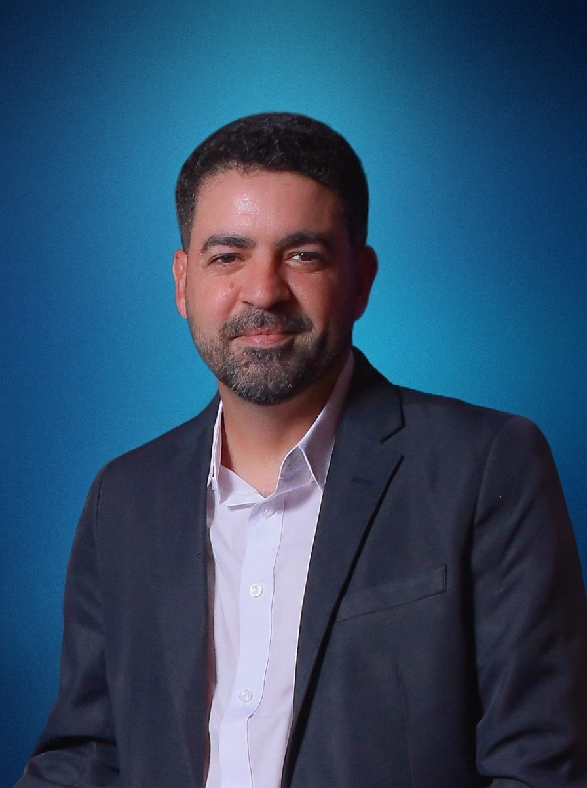

Entender
Conhecer sua operação, suas dificuldades e o que precisa melhorar.
Estratégia, capacitação e desenvolvimento para organizar processos, reduzir tarefas repetitivas e aplicar inteligência artificial com propósito.
Da primeira orientação à construção de uma solução para sua rotina.
As possibilidades são muitas. O desafio é escolher o que faz sentido para sua empresa e transformar ideias em aplicações úteis.
Quero entender por onde começar ↗Encontre o apoio que faz sentido para o seu momento. Explore cada serviço para conhecer as aplicações.
Cada projeto começa com uma necessidade real e evolui com escopo, testes e critérios de sucesso definidos.
Conhecer sua operação, suas dificuldades e o que precisa melhorar.
Escolher uma oportunidade considerando utilidade, esforço e viabilidade.
Estruturar a consultoria, o treinamento ou a solução com entregas claras.
Avaliar em situações reais e ajustar o que for necessário.
Preparar sua equipe para utilizar a entrega no dia a dia.

Nos últimos anos, mergulhei fundo no universo da Inteligência Artificial com um único objetivo: resolver problemas reais na minha própria gestão de marketing, design e negócios.
Antes de oferecer qualquer consultoria ou ferramenta para o mercado, eu mesmo fui o laboratório. Criei sistemas multi-agentes para automatizar campanhas, desenvolvi aplicativos próprios para escalar identidades visuais, estruturei painéis de inteligência comercial e redesenhei processos inteiros.
Os resultados que alcancei no meu dia a dia provaram que a distância entre uma empresa estagnada e uma operação hiperprodutiva está em saber conectar a visão de negócios com a ferramenta certa. Hoje, abro a caixa-preta de tudo o que desenvolvi para implementar e ensinar essa mesma engenharia no seu negócio.
Vamos conversar sobre o seu desafio ↗Consultoria para identificar oportunidades, definir prioridades e estruturar um plano de aplicação.
Encontrar meu ponto de partida ↗Workshops e capacitações com exemplos e exercícios relacionados à realidade do trabalho.
Planejar uma capacitação ↗Avaliação e desenvolvimento de agentes, automações, aplicativos e ferramentas digitais.
Conversar sobre minha ideia ↗Conte o que ocupa tempo, gera retrabalho ou impede sua equipe de avançar. Vamos avaliar uma aplicação que faça sentido para o seu negócio.